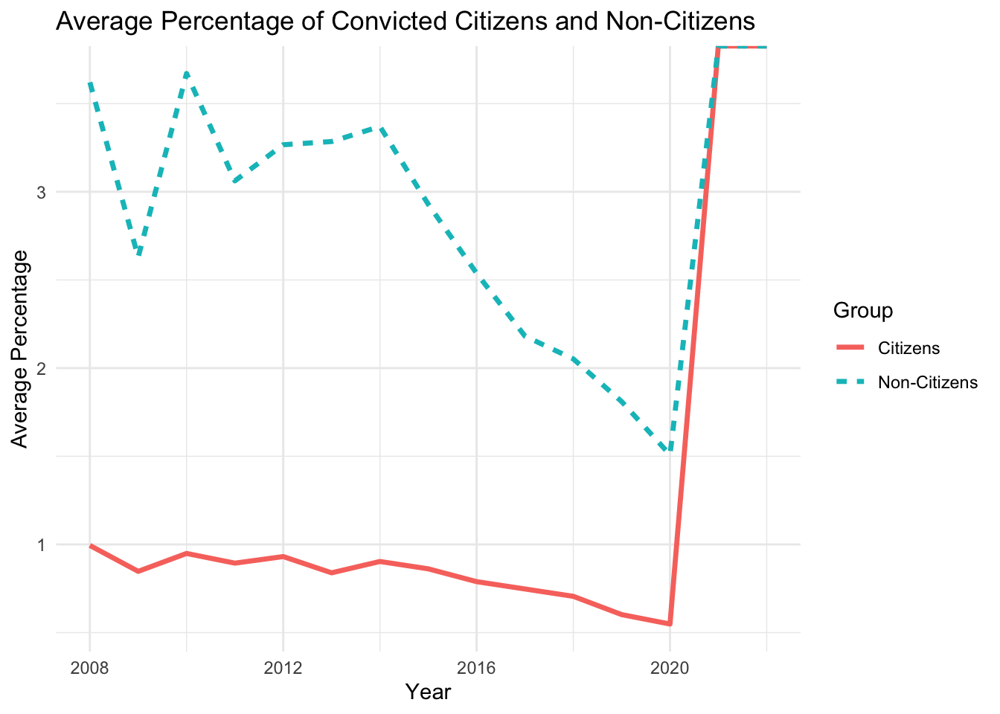
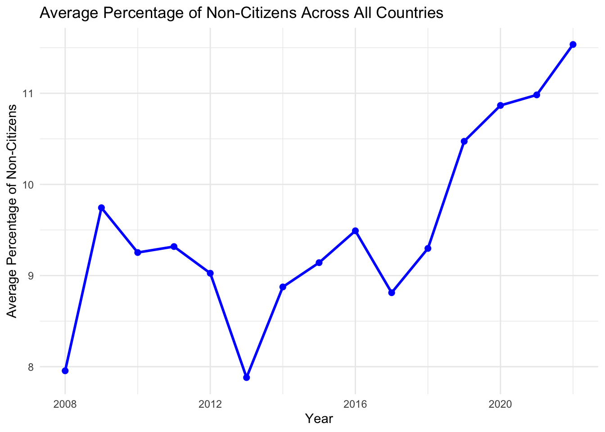

| Dataset | Rows | Columns | Years Covered | Number of Countries | Total Datapoints |
|---|---|---|---|---|---|
| Crime Dataset | 6868 | 7 | 2008 - 2022 | 41 | 48076 |
| Ideology Dataset | 6160 | 7 | 2019 - 2023 | 28 | 43120 |
| Manifesto Dataset | 5151 | 175 | 1920 - 2023 | 67 | 901425 |
Crime, Ideology, and Manifestos: A Comparative Study of European Political Trends
Link to GitHub
Links to the sources
Sources download links
Websites links from which data was extracted
Data description
Eurostat Crime and Criminal Justice Dataset
The Eurostat Crime and Criminal Justice dataset provides yearly statistics on the citizens and non-citizens within the justice system across European Union member states, covering the period from 2008 to 2022. It includes data on suspicion and conviction rates per 1,000 inhabitants, offering insights into both the number of individuals suspected of crimes and those convicted. By distinguishing between citizens and non-citizens, this dataset sheds light on potential disparities in how these groups are treated within the legal system. Such information is crucial for understanding systemic inequities and evaluating the impact of policies on different demographics.
Manifesto Project Dataset -
The Manifesto Project dataset offers a systematic analysis of political party manifestos across various countries, including EU member states. Spanning elections from 1946 to 2017 (with country-specific coverage), it captures the percentage of text devoted to key themes such as “law and order,” “national security,” and “national values.” This dataset is particularly valuable for studying the evolution of political discourse over time and across contexts. The dataset’s coding of text into quantifiable measures makes it a powerful tool for understanding the role of party platforms in shaping public opinion and influencing policy. Its detailed historical scope enables longitudinal studies of political ideologies and their relationship with contemporary governance trends.
EU Political Barometer Dataset -
The EU Political Barometer dataset provides bi-monthly data on public opinion and political preferences across EU member states from 2019 to 2023. It tracks ideological shifts, political attitudes, and public reactions to major societal events and political campaigns. Key indicators include changes in support for various ideologies and parties, offering a granular view of how public sentiment evolves over time. This dataset is particularly useful for analyzing short-term trends and understanding the relationship between political discourse and public opinion. By examining fluctuations in attitudes during specific events or election campaigns, we can identify patterns in voter behavior and ideological alignment. Its frequent updates make it a critical resource for real-time political analysis and policy evaluation.
Description table
Short description of the most important variables
Crime dataset
“leg_stat”: “PER_SUSP” indicates individuals who are suspected of committing crimes, “PER_CNV” indicates individuals who are convicted of crimes.
“citizen”: “NAT” indicates nationals (citizens of the reporting country), “FOR” represents foreigners (non-citizens).
Ideology dataset
“left_ideology”: numeric score (0-10) representing the left-wing ideological positioning in the country, where a higher value corresponds to stronger left ideology.
“right_ideology”: numeric score (0-10) representing the right-wing ideological positioning in the country, where a higher value corresponds to stronger right ideology.
“dalton”: named after the political scientist Russell Dalton, a numeric score (0-10) that shows the degree of ideological polarization in a country, where a higher score corresponds to higher polarization.
Manifesto dataset
“per101 to per109”: represent the percentage of the political party’s manifesto dedicated to specific themes related to national security, crime, and immigration. They focus on topics like law and order, national security, crime prevention, and the role of the state in dealing with security threats. Specifically: per101: Law and Order, per102: National Security, per103: Crime and Punishment, per104: Prison and Penal System, per105: Immigration, per106: International Relations (related to security), per107: Economic Issues, per108: Welfare and Social Issues, per109: Cultural and National Identity
“per201 to per204”: focus on economic policies, social support, and public services, potentially linking to discussions about immigration’s impact on the economy and social welfare. Specifically, per201: Economic Growth, per202: Employment, per203: Social Security, per204: Public Services
“per301 to per305”: focus on social welfare, social issues, and public goods, which might also intersect with debates around immigration and crime in relation to societal well being and state responsibility. Specifically, per301: Social Welfare, per302: Education, per303: Health Care, per304: Family Support, per305: Environment and Sustainability.
Cleaning of the data
Cleaning of Eurostat Data, Crime
Filtering and cleaning: remove irrelevant categories (e.g., “TOTAL” citizens and “PER_PRSC” status), keeping only the data for citizens and non-citizens related to crime suspicion and conviction.
Country name assignment: convert country codes to full country names using the “countrycode” package.
Category creation: classify data into four categories based on citizenship and legal status: “Convicted Citizens,” “Convicted Non-Citizens,” “Suspected Citizens,” and “Suspected Non-Citizens.”
Drop irrelevant variables: include only variables of interest: country, date, citizenship and legal status category, and crime rates.
Data reshaping: pivot the data to have a single row per country per year, with columns for each of the four categories (convicted and suspected citizens/non-citizens).
Cleaning of Barometer Data, ideology
Filter invalid data: removes data related to “ewma” (exponentially weighted moving average) and retain only real ideological scores.
Date filtering: filter the dataset to include only data up until 2023.
Joint Cleaning
- Data intersection: ensure that only countries present in both the Crime, Manifesto, and Ideology datasets remain in each dataset. This is achieved through a semi_join to keep only the common countries.
Cleaning of Manifesto Data, manifesto
Date filtering: remove data before 2008 (the first available year in the Crime dataset).
Column selection: Keeps only relevant columns in the manifesto dataset (e.g., political themes related to law and order, national security, immigration).
Group by date and country
- Manifesto Data: extract the year from the date and group the data by country and year to compute the average percentage of the manifesto dedicated to specific themes like law and order, national security, and immigration.
_ Ideology Data: extract the year from the date and groups the data by country and year to calculate the average ideological scores (left, right, and Dalton’s polarization index).
Merge datasets
- Renaming and merging: Rename columns in the Crime, Manifesto, and Ideology datasets for consistency and merge them into one unified dataset. “full_join” is used to ensure no data is lost while combining them based on country and year.
A description of the research question
Research question: What is the association between immigration and crime suspicions and convictions in the EU, considering political ideology?
The research explores the relationship between immigration status and crime outcomes (suspicion and conviction rates) in EU countries. It questions whether claims by political entities, particularly right-wing parties, that immigration drives up crime rates hold true, and explores how other intervening factors, such as the demographic profile of immigrants, might contribute to this perception.
Background context and relevance Right-wing political narratives often link immigration with rising crime rates without acknowledging broader contextual factors. For example, statistical evidence suggests that most crimes are committed by young males—a group overrepresented among immigrant populations. Across the EU, a significant proportion of non-citizens are young males: non-national men aged 20–49 constitute 29% of their demographic group, compared to 18% for nationals. Additionally, 54–60% of unauthorized immigrants are male, with a majority under 35 years old. Such demographic realities could skew perceptions of immigrant involvement in crime when not carefully controlled for. *Source: Migration 2023
This research aims to integrate crime statistics and demographic data with measures of political ideology to disentangle these associations. By doing so, it challenges simplistic narratives and aims to explore whether shifts in political rhetoric influence crime outcomes or merely exacerbate perceptions of immigrant criminality.
Data and methodology
Crime Data: Eurostat provides comprehensive data on annual suspicion and conviction rates per 1,000 residents, dis-aggregated by citizenship (non-citizens vs. citizens) for 2008–2022. This allows for trend analysis of disparities between groups.
Political ideology data:
- Manifesto Project Database: Tracks the content of political party platforms during election years, focusing on themes such as “law and order” and “security.”
- EU Political Barometer: Captures public opinion on political ideologies monthly from 2019–2023.
- Manifesto Project Database: Tracks the content of political party platforms during election years, focusing on themes such as “law and order” and “security.”
A Difference-in-Differences (DiD) approach will compare changes in crime-related outcomes before and after election periods with shifts in ideological rhetoric. Non-election years serve as a control group, isolating the causal effect of political discourse.
Core issues addressed
The research will investigate: 1. Whether increased suspicion of immigrant crime correlates with heightened right-wing rhetoric. 2. If young male over representation among immigrants, rather than immigrant status itself, explains these crime rates.
3. Do conviction rates—representing judicial outcomes—reflect ideological trends, or are they more stable and less subject to political influence?
Significance and expected outcomes
This study seeks to clarify how political discourse shapes public perceptions and crime outcomes involving immigrants. Preliminary hypotheses suggest that while suspicion rates rise in line with ideological shifts, conviction rates remain relatively stable, suggesting biases in suspicion rather than evidence-based outcomes. By emphasizing intervening factors like demographics, the research highlights the importance of nuanced policymaking and avoids perpetuating harmful stereotypes.
Target variable
Crime suspicion rates over time for citizens and non-citizens (immigrants) for selected countries
Warning: Using `size` aesthetic for lines was deprecated in ggplot2 3.4.0.
ℹ Please use `linewidth` instead.
Crime conviction rates over time for citizens and non-citizens (immigrants) for selected countries

ADDITIONS
to make a better graph we should show the numbers as a percentage of total rather than just numbers. so, suspected non-citizens as a % of total non-citizens, and compare that to suspected citizens as a % of total citizens, etc… to do that, we can use the following dataset: Population on 1 January by age, sex and broad group of citizenship (migr_pop2ctz)
convicted
pop <- pop %>%
mutate(
country = countrycode(geo, origin = "iso2c", destination = "country.name", warn = FALSE)
) %>%
filter(!is.na(country)) %>% # Remove rows where country conversion failed
rename(year = TIME_PERIOD)
# Step 1: Filter pop_data for citizens (NAT) and non-citizens (FOR_STLS or UNK)
pop_data_citizens <- pop %>%
filter(age == "TOTAL", sex == "T", citizen == "NAT") %>%
select(country, year, values) %>%
rename(population_citizens = values)
pop_data_non_citizens <- pop %>%
filter(age == "TOTAL", sex == "T", citizen %in% c("FOR_STLS", "UNK")) %>%
group_by(country, year) %>%
summarise(population_non_citizens = sum(values, na.rm = TRUE), .groups = "drop")
# Step 2: Merge population datasets
pop_data_combined <- pop_data_citizens %>%
inner_join(pop_data_non_citizens, by = c("country", "year"))
# Step 3: Merge the combined population data with the merged_data (conviction data)
merged_data_final <- merged_data %>%
inner_join(pop_data_combined, by = c("country", "year")) %>%
mutate(
percentage_citizens = (`Convicted Citizens` / population_citizens) * 100,
percentage_non_citizens = (`Convicted Non-Citizens` / population_non_citizens) * 100
)
# Step 4: Prepare data for plotting
plot_data <- merged_data_final %>%
select(country, year, percentage_citizens, percentage_non_citizens) %>%
pivot_longer(
cols = c(percentage_citizens, percentage_non_citizens),
names_to = "group",
values_to = "value_percentage"
) %>%
mutate(group = ifelse(group == "percentage_citizens", "Citizens", "Non-Citizens"))
# Step 5: Create the graph
ggplot(plot_data, aes(x = year, y = value_percentage, color = country, linetype = group)) +
geom_line() +
labs(
title = "Convicted Citizens and Non-Citizens as Percentage of Population",
x = "Year",
y = "Percentage",
color = "Country",
linetype = "Group"
) +
theme_minimal()Warning: Removed 204 rows containing missing values or values outside the scale range
(`geom_line()`).
avg convicted
pop <- get_eurostat("migr_pop2ctz", time_format = "num", stringsAsFactors = TRUE)Dataset query already saved in cache_list.json...Reading cache file /var/folders/xp/jpwjqby529q9r3tcpyht_7m40000gn/T//RtmprXEUu7/eurostat/7253f098504e428250ed0c35512fb7d1.rdsTable migr_pop2ctz read from cache file: /var/folders/xp/jpwjqby529q9r3tcpyht_7m40000gn/T//RtmprXEUu7/eurostat/7253f098504e428250ed0c35512fb7d1.rdspop <- pop %>%
mutate(
country = countrycode(geo, origin = "iso2c", destination = "country.name", warn = FALSE)
) %>%
filter(!is.na(country)) %>% # Remove rows where country conversion failed
rename(year = TIME_PERIOD)
# Step 1: Filter and prepare population data as before
pop_data_citizens <- pop %>%
filter(age == "TOTAL", sex == "T", citizen == "NAT") %>%
select(country, year, values) %>%
rename(population_citizens = values)
pop_data_non_citizens <- pop %>%
filter(age == "TOTAL", sex == "T", citizen %in% c("FOR_STLS", "UNK")) %>%
group_by(country, year) %>%
summarise(population_non_citizens = sum(values, na.rm = TRUE), .groups = "drop")
# Step 2: Merge population datasets as before
pop_data_combined <- pop_data_citizens %>%
inner_join(pop_data_non_citizens, by = c("country", "year"))
# Step 3: Merge the combined population data with the merged_data (conviction data)
merged_data_final <- merged_data %>%
inner_join(pop_data_combined, by = c("country", "year")) %>%
mutate(
percentage_citizens = (`Convicted Citizens` / population_citizens) * 100,
percentage_non_citizens = (`Convicted Non-Citizens` / population_non_citizens) * 100
)
# Step 4: Calculate the average percentage across all countries for each year
avg_data <- merged_data_final %>%
group_by(year) %>%
summarise(
avg_percentage_citizens = mean(percentage_citizens, na.rm = TRUE),
avg_percentage_non_citizens = mean(percentage_non_citizens, na.rm = TRUE)
)
# Step 5: Prepare the data for plotting (long format)
plot_data_avg <- avg_data %>%
pivot_longer(
cols = c(avg_percentage_citizens, avg_percentage_non_citizens),
names_to = "group",
values_to = "value_percentage"
) %>%
mutate(group = ifelse(group == "avg_percentage_citizens", "Citizens", "Non-Citizens"))
# Step 6: Create the graph with average data
ggplot(plot_data_avg, aes(x = year, y = value_percentage, color = group, linetype = group)) +
geom_line(size = 1.2) +
labs(
title = "Average Percentage of Convicted Citizens and Non-Citizens",
x = "Year",
y = "Average Percentage",
color = "Group",
linetype = "Group"
) +
theme_minimal()
suspected by country
pop <- get_eurostat("migr_pop2ctz", time_format = "num", stringsAsFactors = TRUE)Dataset query already saved in cache_list.json...Reading cache file /var/folders/xp/jpwjqby529q9r3tcpyht_7m40000gn/T//RtmprXEUu7/eurostat/7253f098504e428250ed0c35512fb7d1.rdsTable migr_pop2ctz read from cache file: /var/folders/xp/jpwjqby529q9r3tcpyht_7m40000gn/T//RtmprXEUu7/eurostat/7253f098504e428250ed0c35512fb7d1.rdspop <- pop %>%
mutate(
country = countrycode(geo, origin = "iso2c", destination = "country.name", warn = FALSE)
) %>%
filter(!is.na(country)) %>% # Remove rows where country conversion failed
rename(year = TIME_PERIOD)
# Step 1: Filter pop_data for citizens (NAT) and non-citizens (FOR_STLS or UNK)
pop_data_citizens <- pop %>%
filter(age == "TOTAL", sex == "T", citizen == "NAT") %>%
select(country, year, values) %>%
rename(population_citizens = values)
pop_data_non_citizens <- pop %>%
filter(age == "TOTAL", sex == "T", citizen %in% c("FOR_STLS", "UNK")) %>%
group_by(country, year) %>%
summarise(population_non_citizens = sum(values, na.rm = TRUE), .groups = "drop")
# Step 2: Merge population datasets
pop_data_combined <- pop_data_citizens %>%
inner_join(pop_data_non_citizens, by = c("country", "year"))
# Step 3: Merge the combined population data with the merged_data (conviction data)
merged_data_final <- merged_data %>%
inner_join(pop_data_combined, by = c("country", "year")) %>%
mutate(
percentage_citizens = (`Suspected Citizens` / population_citizens) * 100,
percentage_non_citizens = (`Suspected Non-Citizens` / population_non_citizens) * 100
)
# Step 4: Prepare data for plotting
plot_data <- merged_data_final %>%
select(country, year, percentage_citizens, percentage_non_citizens) %>%
pivot_longer(
cols = c(percentage_citizens, percentage_non_citizens),
names_to = "group",
values_to = "value_percentage"
) %>%
mutate(group = ifelse(group == "percentage_citizens", "Citizens", "Non-Citizens"))
# Step 5: Create the graph
ggplot(plot_data, aes(x = year, y = value_percentage, color = country, linetype = group)) +
geom_line() +
labs(
title = "Convicted Citizens and Non-Citizens as Percentage of Population",
x = "Year",
y = "Percentage",
color = "Country",
linetype = "Group"
) +
theme_minimal()Warning: Removed 122 rows containing missing values or values outside the scale range
(`geom_line()`).
avg suspected
pop <- get_eurostat("migr_pop2ctz", time_format = "num", stringsAsFactors = TRUE)Dataset query already saved in cache_list.json...Reading cache file /var/folders/xp/jpwjqby529q9r3tcpyht_7m40000gn/T//RtmprXEUu7/eurostat/7253f098504e428250ed0c35512fb7d1.rdsTable migr_pop2ctz read from cache file: /var/folders/xp/jpwjqby529q9r3tcpyht_7m40000gn/T//RtmprXEUu7/eurostat/7253f098504e428250ed0c35512fb7d1.rdspop <- pop %>%
mutate(
country = countrycode(geo, origin = "iso2c", destination = "country.name", warn = FALSE)
) %>%
filter(!is.na(country)) %>% # Remove rows where country conversion failed
rename(year = TIME_PERIOD)
# Step 1: Filter and prepare population data as before
pop_data_citizens <- pop %>%
filter(age == "TOTAL", sex == "T", citizen == "NAT") %>%
select(country, year, values) %>%
rename(population_citizens = values)
pop_data_non_citizens <- pop %>%
filter(age == "TOTAL", sex == "T", citizen %in% c("FOR_STLS", "UNK")) %>%
group_by(country, year) %>%
summarise(population_non_citizens = sum(values, na.rm = TRUE), .groups = "drop")
# Step 2: Merge population datasets as before
pop_data_combined <- pop_data_citizens %>%
inner_join(pop_data_non_citizens, by = c("country", "year"))
# Step 3: Merge the combined population data with the merged_data (conviction data)
merged_data_final <- merged_data %>%
inner_join(pop_data_combined, by = c("country", "year")) %>%
mutate(
percentage_citizens = (`Suspected Citizens` / population_citizens) * 100,
percentage_non_citizens = (`Suspected Non-Citizens` / population_non_citizens) * 100
)
# Step 4: Calculate the average percentage across all countries for each year
avg_data <- merged_data_final %>%
group_by(year) %>%
summarise(
avg_percentage_citizens = mean(percentage_citizens, na.rm = TRUE),
avg_percentage_non_citizens = mean(percentage_non_citizens, na.rm = TRUE)
)
# Step 5: Prepare the data for plotting (long format)
plot_data_avg <- avg_data %>%
pivot_longer(
cols = c(avg_percentage_citizens, avg_percentage_non_citizens),
names_to = "group",
values_to = "value_percentage"
) %>%
mutate(group = ifelse(group == "avg_percentage_citizens", "Citizens", "Non-Citizens"))
# Step 6: Create the graph with average data
ggplot(plot_data_avg, aes(x = year, y = value_percentage, color = group, linetype = group)) +
geom_line(size = 1.2) +
labs(
title = "Average Percentage of Suspected Citizens and Non-Citizens",
x = "Year",
y = "Average Percentage",
color = "Group",
linetype = "Group"
) +
theme_minimal()
lm test
# Step 1: Calculate total convicted and suspected persons
merged_data_final <- merged_data_final %>%
mutate(
total_convicted = `Convicted Citizens` + `Convicted Non-Citizens`,
total_suspected = `Suspected Citizens` + `Suspected Non-Citizens`,
percentage_non_citizens_in_population = (population_non_citizens / (population_non_citizens + population_citizens)) * 100
)
# Step 2: Analyze the effect of percentage of non-citizens on total convicted persons
convicted_analysis_data <- merged_data_final %>%
select(country, year, percentage_non_citizens_in_population, total_convicted)
# Scatter plot for convicted persons
ggplot(convicted_analysis_data, aes(x = percentage_non_citizens_in_population, y = total_convicted, color = country)) +
geom_point() +
geom_smooth(method = "lm", se = FALSE, color = "black", linetype = "dashed") +
labs(
title = "Effect of Percentage of Non-Citizens on Total Convicted Persons",
x = "Percentage of Non-Citizens in Total Population",
y = "Total Convicted Persons"
) +
theme_minimal()`geom_smooth()` using formula = 'y ~ x'Warning: Removed 107 rows containing non-finite outside the scale range
(`stat_smooth()`).Warning: Removed 107 rows containing missing values or values outside the scale range
(`geom_point()`).
# Step 3: Analyze the effect of percentage of non-citizens on total suspected persons
suspected_analysis_data <- merged_data_final %>%
select(country, year, percentage_non_citizens_in_population, total_suspected)
# Scatter plot for suspected persons
ggplot(suspected_analysis_data, aes(x = percentage_non_citizens_in_population, y = total_suspected, color = country)) +
geom_point() +
geom_smooth(method = "lm", se = FALSE, color = "black", linetype = "dashed") +
labs(
title = "Effect of Percentage of Non-Citizens on Total Suspected Persons",
x = "Percentage of Non-Citizens in Total Population",
y = "Total Suspected Persons"
) +
theme_minimal()`geom_smooth()` using formula = 'y ~ x'Warning: Removed 63 rows containing non-finite outside the scale range
(`stat_smooth()`).Warning: Removed 63 rows containing missing values or values outside the scale range
(`geom_point()`).# Optional Step 4: Perform linear regression analysis
model_convicted <- lm(total_convicted ~ percentage_non_citizens_in_population, data = merged_data_final)
summary(model_convicted)
Call:
lm(formula = total_convicted ~ percentage_non_citizens_in_population,
data = merged_data_final)
Residuals:
Min 1Q Median 3Q Max
-163511 -141006 -94168 53510 713398
Coefficients:
Estimate Std. Error t value Pr(>|t|)
(Intercept) 176513 18653 9.463 <2e-16 ***
percentage_non_citizens_in_population -1725 1482 -1.164 0.246
---
Signif. codes: 0 '***' 0.001 '**' 0.01 '*' 0.05 '.' 0.1 ' ' 1
Residual standard error: 211600 on 243 degrees of freedom
(107 observations deleted due to missingness)
Multiple R-squared: 0.005544, Adjusted R-squared: 0.001452
F-statistic: 1.355 on 1 and 243 DF, p-value: 0.2456model_suspected <- lm(total_suspected ~ percentage_non_citizens_in_population, data = merged_data_final)
summary(model_suspected)
Call:
lm(formula = total_suspected ~ percentage_non_citizens_in_population,
data = merged_data_final)
Residuals:
Min 1Q Median 3Q Max
-345031 -308563 -188663 -4310 2041297
Coefficients:
Estimate Std. Error t value Pr(>|t|)
(Intercept) 361832 43714 8.277 4.81e-15 ***
percentage_non_citizens_in_population -3672 3057 -1.201 0.231
---
Signif. codes: 0 '***' 0.001 '**' 0.01 '*' 0.05 '.' 0.1 ' ' 1
Residual standard error: 537700 on 287 degrees of freedom
(63 observations deleted due to missingness)
Multiple R-squared: 0.004999, Adjusted R-squared: 0.001533
F-statistic: 1.442 on 1 and 287 DF, p-value: 0.2308Interaction effects
model_interaction <- lm(total_convicted ~ percentage_non_citizens_in_population * country, data = merged_data_final)
summary(model_interaction)
Call:
lm(formula = total_convicted ~ percentage_non_citizens_in_population *
country, data = merged_data_final)
Residuals:
Min 1Q Median 3Q Max
-203329 -6148 -290 4786 117413
Coefficients: (1 not defined because of singularities)
Estimate Std. Error
(Intercept) 57482 42263
percentage_non_citizens_in_population -1900 3046
countryBelgium -188996 141825
countryBulgaria -13748 46399
countryCroatia -41302 81164
countryDenmark 700679 117948
countryFinland 339765 56720
countryFrance 1074585 90127
countryGermany 960405 61237
countryHungary 27548 70880
countryItaly 325117 85475
countryLatvia -60772 88650
countryLuxembourg -69802 1570803
countryMontenegro -41384 36543
countryNorway 134508 87414
countryPoland 384240 46000
countryPortugal 34894 61392
countryRomania -25228 113226
countrySlovakia -29524 43777
countrySlovenia -47062 73875
countrySpain 607459 129208
countrySwitzerland 59288 137404
percentage_non_citizens_in_population:countryBelgium 27327 12255
percentage_non_citizens_in_population:countryBulgaria -11555 18192
percentage_non_citizens_in_population:countryCroatia -2290 104349
percentage_non_citizens_in_population:countryDenmark -71618 13183
percentage_non_citizens_in_population:countryFinland -61330 9868
percentage_non_citizens_in_population:countryFrance -81398 12310
percentage_non_citizens_in_population:countryGermany -24473 5273
percentage_non_citizens_in_population:countryHungary -5711 32198
percentage_non_citizens_in_population:countryItaly -18356 10632
percentage_non_citizens_in_population:countryLatvia 2687 5930
percentage_non_citizens_in_population:countryLuxembourg 2331 33308
percentage_non_citizens_in_population:countryMontenegro NA NA
percentage_non_citizens_in_population:countryNorway -13048 8199
percentage_non_citizens_in_population:countryPoland -229202 37564
percentage_non_citizens_in_population:countryPortugal -5583 10756
percentage_non_citizens_in_population:countryRomania 3808 164110
percentage_non_citizens_in_population:countrySlovakia 2761 5718
percentage_non_citizens_in_population:countrySlovenia 1274 9684
percentage_non_citizens_in_population:countrySpain -37725 12033
percentage_non_citizens_in_population:countrySwitzerland 1365 6264
t value Pr(>|t|)
(Intercept) 1.360 0.175299
percentage_non_citizens_in_population -0.624 0.533551
countryBelgium -1.333 0.184150
countryBulgaria -0.296 0.767303
countryCroatia -0.509 0.611394
countryDenmark 5.941 1.21e-08 ***
countryFinland 5.990 9.34e-09 ***
countryFrance 11.923 < 2e-16 ***
countryGermany 15.683 < 2e-16 ***
countryHungary 0.389 0.697939
countryItaly 3.804 0.000188 ***
countryLatvia -0.686 0.493785
countryLuxembourg -0.044 0.964600
countryMontenegro -1.132 0.258765
countryNorway 1.539 0.125417
countryPoland 8.353 1.01e-14 ***
countryPortugal 0.568 0.570401
countryRomania -0.223 0.823905
countrySlovakia -0.674 0.500800
countrySlovenia -0.637 0.524803
countrySpain 4.701 4.75e-06 ***
countrySwitzerland 0.431 0.666572
percentage_non_citizens_in_population:countryBelgium 2.230 0.026848 *
percentage_non_citizens_in_population:countryBulgaria -0.635 0.526035
percentage_non_citizens_in_population:countryCroatia -0.022 0.982509
percentage_non_citizens_in_population:countryDenmark -5.432 1.57e-07 ***
percentage_non_citizens_in_population:countryFinland -6.215 2.85e-09 ***
percentage_non_citizens_in_population:countryFrance -6.612 3.25e-10 ***
percentage_non_citizens_in_population:countryGermany -4.641 6.19e-06 ***
percentage_non_citizens_in_population:countryHungary -0.177 0.859400
percentage_non_citizens_in_population:countryItaly -1.726 0.085785 .
percentage_non_citizens_in_population:countryLatvia 0.453 0.650939
percentage_non_citizens_in_population:countryLuxembourg 0.070 0.944265
percentage_non_citizens_in_population:countryMontenegro NA NA
percentage_non_citizens_in_population:countryNorway -1.591 0.113074
percentage_non_citizens_in_population:countryPoland -6.102 5.20e-09 ***
percentage_non_citizens_in_population:countryPortugal -0.519 0.604261
percentage_non_citizens_in_population:countryRomania 0.023 0.981509
percentage_non_citizens_in_population:countrySlovakia 0.483 0.629743
percentage_non_citizens_in_population:countrySlovenia 0.132 0.895464
percentage_non_citizens_in_population:countrySpain -3.135 0.001971 **
percentage_non_citizens_in_population:countrySwitzerland 0.218 0.827736
---
Signif. codes: 0 '***' 0.001 '**' 0.01 '*' 0.05 '.' 0.1 ' ' 1
Residual standard error: 31070 on 204 degrees of freedom
(107 observations deleted due to missingness)
Multiple R-squared: 0.982, Adjusted R-squared: 0.9785
F-statistic: 278.1 on 40 and 204 DF, p-value: < 2.2e-16effect of polarization on total convicted
model_with_dalton <- lm(total_convicted ~ dalton + year, data = merged_data_final)
summary(model_with_dalton)
Call:
lm(formula = total_convicted ~ dalton + year, data = merged_data_final)
Residuals:
Min 1Q Median 3Q Max
-216655 -100639 -41318 32516 509181
Coefficients:
Estimate Std. Error t value Pr(>|t|)
(Intercept) 27052265 40180289 0.673 0.503
dalton 136985 31335 4.372 5.08e-05 ***
year -13609 19888 -0.684 0.496
---
Signif. codes: 0 '***' 0.001 '**' 0.01 '*' 0.05 '.' 0.1 ' ' 1
Residual standard error: 171900 on 59 degrees of freedom
(290 observations deleted due to missingness)
Multiple R-squared: 0.249, Adjusted R-squared: 0.2235
F-statistic: 9.781 on 2 and 59 DF, p-value: 0.0002145ggplot(merged_data_final, aes(x = dalton, y = total_convicted)) +
geom_point() +
geom_smooth(method = "lm", se = TRUE) +
labs(title = "Relationship Between Dalton and Total Convicted",
x = "Dalton Index",
y = "Total Convicted") +
theme_minimal()`geom_smooth()` using formula = 'y ~ x'Warning: Removed 290 rows containing non-finite outside the scale range
(`stat_smooth()`).Warning: Removed 290 rows containing missing values or values outside the scale range
(`geom_point()`).
effect of polarizatino on total conviction.
model_with_polynomial <- lm(total_convicted ~ dalton + poly(year, 2), data = merged_data_final)
summary(model_with_polynomial)
Call:
lm(formula = total_convicted ~ dalton + poly(year, 2), data = merged_data_final)
Residuals:
Min 1Q Median 3Q Max
-225431 -99217 -43844 37893 514440
Coefficients:
Estimate Std. Error t value Pr(>|t|)
(Intercept) -26840 920785 -0.029 0.977
dalton 138250 31732 4.357 5.45e-05 ***
poly(year, 2)1 -8353886 18808123 -0.444 0.659
poly(year, 2)2 2648284 6835368 0.387 0.700
---
Signif. codes: 0 '***' 0.001 '**' 0.01 '*' 0.05 '.' 0.1 ' ' 1
Residual standard error: 173100 on 58 degrees of freedom
(290 observations deleted due to missingness)
Multiple R-squared: 0.2509, Adjusted R-squared: 0.2122
F-statistic: 6.477 on 3 and 58 DF, p-value: 0.0007417effect of righht wing on total conviction
model_with_ideology <- lm(total_convicted ~ right_ideology + year, data = merged_data_final)
summary(model_with_ideology)
Call:
lm(formula = total_convicted ~ right_ideology + year, data = merged_data_final)
Residuals:
Min 1Q Median 3Q Max
-201027 -130014 -51788 59116 564936
Coefficients:
Estimate Std. Error t value Pr(>|t|)
(Intercept) -40543709 47264754 -0.858 0.39447
right_ideology 123309 37616 3.278 0.00175 **
year 19662 23332 0.843 0.40281
---
Signif. codes: 0 '***' 0.001 '**' 0.01 '*' 0.05 '.' 0.1 ' ' 1
Residual standard error: 181900 on 59 degrees of freedom
(290 observations deleted due to missingness)
Multiple R-squared: 0.1589, Adjusted R-squared: 0.1304
F-statistic: 5.574 on 2 and 59 DF, p-value: 0.006061model_convicted_non_citizens <- lm(`Convicted Non-Citizens` ~ right_ideology + year, data = merged_data_final)
summary(model_convicted_non_citizens)
Call:
lm(formula = `Convicted Non-Citizens` ~ right_ideology + year,
data = merged_data_final)
Residuals:
Min 1Q Median 3Q Max
-52964 -32202 -16526 4644 220835
Coefficients:
Estimate Std. Error t value Pr(>|t|)
(Intercept) -16533475 15500244 -1.067 0.2905
right_ideology 31998 12336 2.594 0.0119 *
year 8076 7652 1.056 0.2955
---
Signif. codes: 0 '***' 0.001 '**' 0.01 '*' 0.05 '.' 0.1 ' ' 1
Residual standard error: 59660 on 59 degrees of freedom
(290 observations deleted due to missingness)
Multiple R-squared: 0.1024, Adjusted R-squared: 0.07201
F-statistic: 3.367 on 2 and 59 DF, p-value: 0.04125